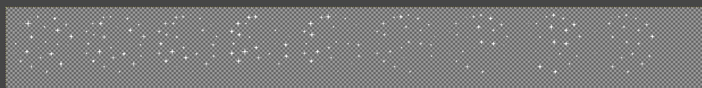
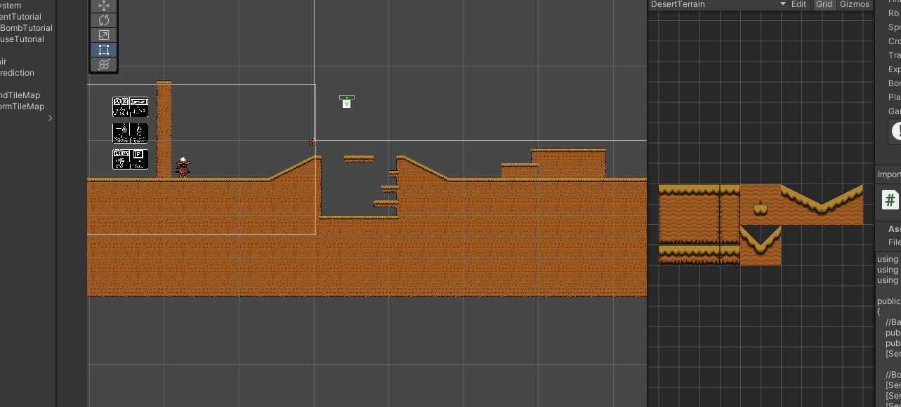
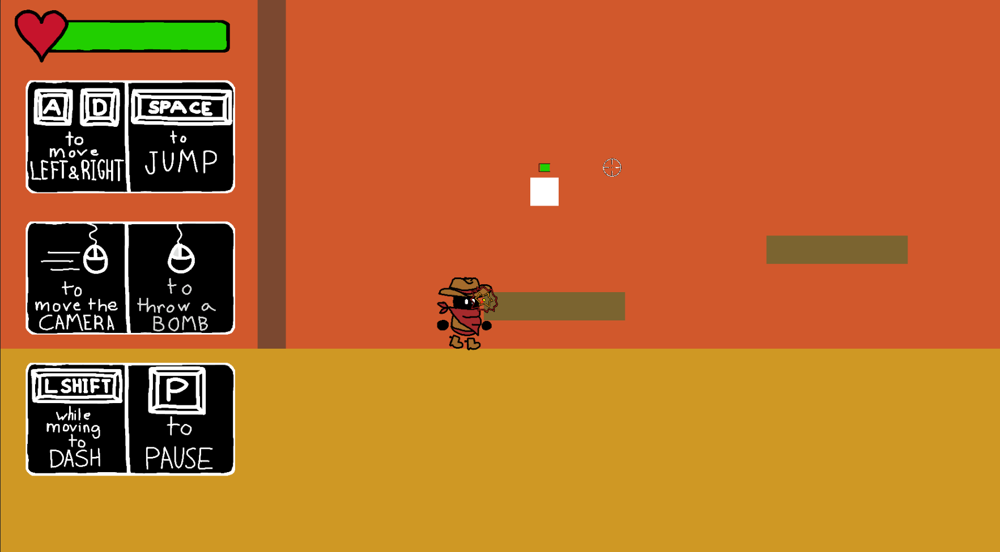
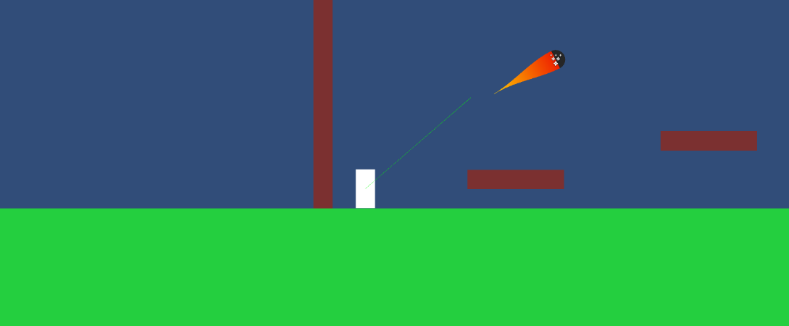
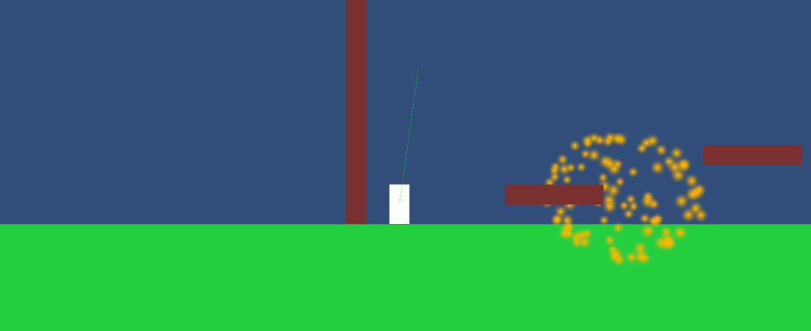

Update Log
7-31-2022
Completed the digging down animation, the digging out animation (digging down but backwards), and the underground animation (invisible mole). Completed the animation logic for the mole and also added borders that kill the player if they reach them (they are out of bounds).
7-30-2022
Worked on the digging down animation for the mole.
7-29-2022
Completed the animation for the mole when it’s above ground.
7-28-2022
Changed all collectables to an OnTriggerEnter system (doesn’t physically collide with the player, but knows when the player overlaps with its hitbox) to stop the halting of the player when collecting items. Worked on the mole animations.
7-27-2022
Tortank now has the ability to get “unstuck” (doesn’t affect gameplay). Increased tortank walk animation speed. Updated the webpage with the latest game version and caught up the update log.
7-26-2022
Finished animations for a tortank hiding in its shell and coming out of its shell. Altered the animation scale and bullet creation point to match the animation.
7-25-2022
Finished animation of the tortank going in its shell.
7-24-2022
Created the final sprite and walking animation for the tortoise enemy (now named tortank).
7-23-2022
Finished animations for the jump up and speed up sprites.
7-22-2022
Finished lob up power up animation.
7-21-2022
Finished “sparkle” effect sprite sheet (can now be applied to all power ups) and applied it to the damage up power up. Started work on lob up power up.

7-20-2022
Finished damage up power up sprite.
7-19-2022
Animation bug is now fixed (had to uncheck “can transition to self”). Re-organized animation logic tab. Added hovering animation to collectables (shards and power ups). Added knockback animation.
.png)
7-18-2022
Player jumping and falling animations completed and semi-implemented. Problem: only the first frame of each animation is playing.
July 9-16
One week hiatus. Took a trip to Boston. They have great oysters.
7-8-2022
Player idle animation completed. Player running animation completed. Player dashing animation completed.
7-7-2022
Began work on creating a player sprite sheet for animation.
7-6-2022
Updated dash icon and added shards, shard counter, and final shard score on game over screen.
7-5-2022
Added power up indications (blue trail for speed up, big red bomb for damage up, yellow trail and yellow cooldown bar for lob up, and green particles for jump up).
.png)
7-3-2022
Added coins, four power ups (speed boost, jump boost, bomb damage boost, bomb cooldown boost), a bomb cooldown bar, a dash cooldown bar, and the beginnings of a power up indicator system for the UI.
7-2-2022
Created a parallax background for the game.
6-30-2022
Finished basic tilemap for terrain.

6-29-2022
Started work on a tileset for a tilemap.
6-28-2022
Added glowing text and a custom favicon to the website.
6-27-2022
Fixed a bug where enemies could take damage twice in one hit. Fixed a bug where the tortoise would be “out of its shell” but still invulnerable to attacks.
6-26-2022
Finished the vulture enemy. Vulture enemies fly horizontally toward the player once their AI is enabled and wait for there to be a clear line of sight between itself and the player. If there is, the vulture will divebomb the player
and explode upon contact with anything, dealing heavy damage if the player is caught in the blast.

6-24-2022
Started work on making the vulture enemy.
6-23-2022
Text and images on the website are now fully responsive to every screen type. The unity game window is still unresponsive, though. Mole enemy completed. Mole starts above ground and digs underground when on screen. The mole then moves
towards the player (it’s invisible) and once it gets close enough, it displays a digging animation (warns the player) and then digs out. If the mole hits the player, the player takes heavy damage (no image will help explain the
mole, try encountering it yourself and see what it does!).
6-22-2022
Fixed knockback to have a fixed angle of knockback (trigonometry came in useful). Started working on mole enemy.
6-21-2022
Added enemy health bars and health drops. Added contact damage with enemies and subsequent knockback that stuns the player. Added pause menu. Added dash mechanic to player movement. Added pause menu and dash tutorial.
.png)
6-20-2022
Let the tortoise enemy move back and forth on its platform.
6-19-2022
Finished tortoise enemy (tortoises can now shoot back at players when out of their shell). Added a start menu and a game over screen. Added player health loss and death. Added a basic tutorial. Added a player health bar. Cleaned up
the code in all the scripts.
6-17-2022
Added bomb damage and the tortoise enemy’s defense mechanism (hiding in shell for a random interval; black color means the turtle is in its shell and cannot be hurt).
6-16-2022
Successfully uploaded the webpage to the web under the url memesterlii.github.io (this was a prototype website, so the url may have changed by the time someone views this)! Made the web page more compatible with different screen sizes.
Fullscreen button now functioning. Added an explosion force when a bomb explodes, knocking nearby objects away. Allows for a bomb jump that boosts the player up. Added a throwing cooldown on the bombs so the player can’t bomb jump
forever.
6-15-2022
Created a small parallax scroll effect for the webpage. Added a sprite for the player. Bombs now rotate when thrown. Fixed sprites clipping with other objects. Added a basic enemy that can take damage (will serve as the framework for
future enemies). Successfully embedded unity game into the web page (chose no compression in the player settings).
6-14-2022
Embedded an earlier build of the Unity game into the website. Unfortunately, it ran into an error. Something about not being hosted on an http web server?
6-13-2022
Stopped trajectory line when a surface is hit. Added a custom cursor and an explosion icon at where the bomb is predicted to land. Created a hand-drawn sprite for the bomb.
6-10-2022
Created a bomb trajectory line.
6-9-2022
Remade website looks. Unified “bomb” themes between the game and the website.
.png)
6-8-2022
Added the main combat system to the game. The player can now click to throw a bomb that explodes upon impact. Actually filled in the update log with current progress. Spruced up the game website with a new color palette and a wave
transition (with SVG), courtesy of Haikei.


6-7-2022
Created a basic layout for this website. Working update log created (what you're looking at now).
6-6-2022
Updated camera control. Users can now pan the camera towards where the user moves the cursor. Camera location is also affected by the player's velocity.
.png)
6-3-2022
Changed the player's shape from a capsule to a rectangle. Added jumping! Took inspiration from Celeste and included “coyote” frames to jump timing, meaning you can still jump a few frames after you walk off an edge. Added “Mario” jump
mechanics (ie. you fall faster than you jump and the apex of your jump depends on how long you hold the spacebar).
Bugs:
- The player would stick to walls if they “walked” into them mid-air.
- The player fell EXTREMELY slowly.
Fixes:
- Adding a physics material to the player that had 0 friction prevented wall-sticking.
- Changed setting vertical velocity of player to 0 every fixed update to setting the vertical velocity to itself, allowing gravity to work unhindered.
.png)
6-2-2022
Created a game website. Established a .html, .js, and a .css file. Linked both .js and .css to the .html file. Aiming to format the website in a way so I can embed the Unity game into it. Played around a bit with element ids, classes,
css styling, and buttons. Planned out website in Google Slides: GameWebsiteRoughDraft
6-1-2022
Opened a new Unity project, created the ground, two walls, and a capsule (player). Added Rigidbody2D (physics) and a hitbox for the player. Created a player script and added horizontal movement (using Rigidbody.MovePosition). Froze
player rotation. Added input to control horizontal movement (Using Input.GetAxisRaw). Created a camera script; camera now follows the player on both X- and Y-axes (Using Transform).
This website and the accompanying game were both originally made by Andre Lee as a summer project with thanks to ID Tech instructors Zachary Rodriguez and YuXiang Dong for their help on the website. Contact me at andrelee2005@gmail.com